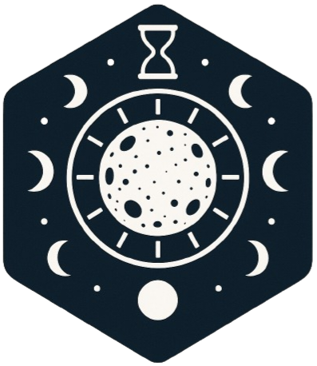

ASTRONOMY // LUNAR TIMING
Lunar Clock
High-precision lunar phase and age clock concept with eclipse, standstill, nodal-cycle, and synodic timing for astronomical and ritual synchronization.
BROWSER EPHEMERIS
Lunar phase workbench
SYNODIC AGEILLUMINATIONAPPROX. NODAL/ECLIPSE MODEL
—
Age—
Illuminated—
Julian Date—
Lunation index—
Next new moon
Next quarter point
Nodal / standstill cycle model
Eclipse-season proximity model